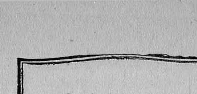
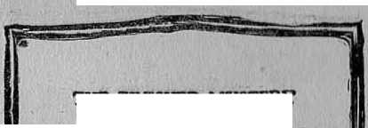
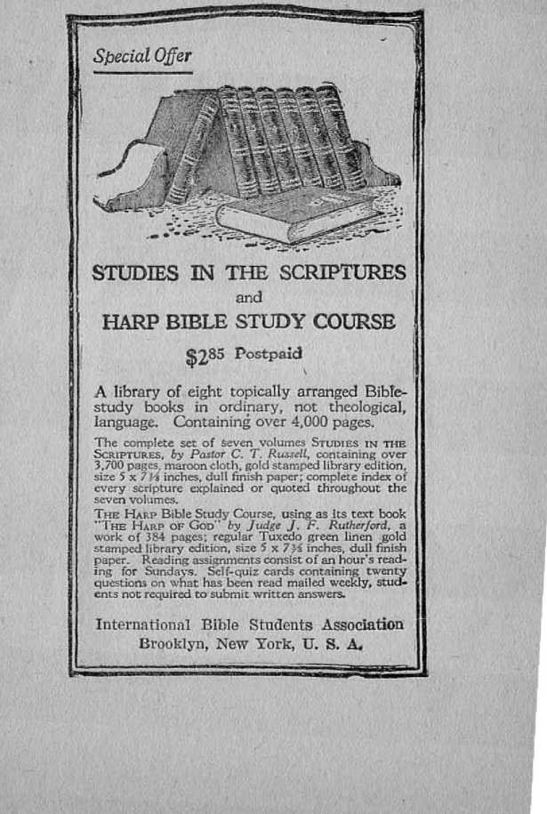
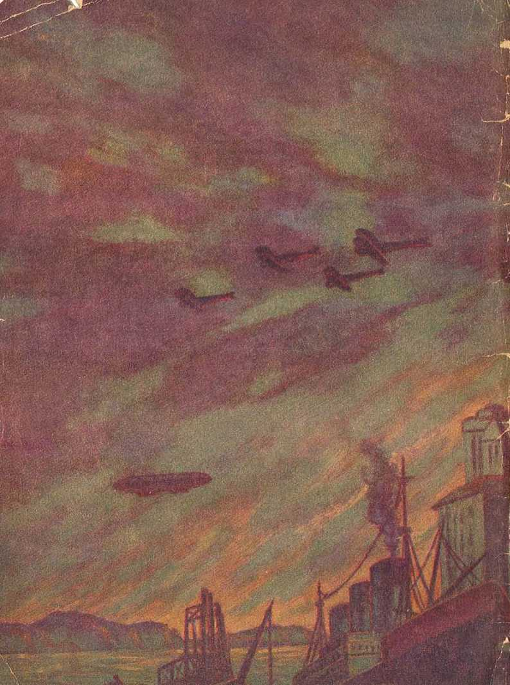

INTERNATIONAL BIBLE STUDENTS ASSOCIATION Brooklyn, N. Y.
Also: London, England ; Melbourne, Australia; Toronto, Canada; Cape Town, So. Afries : Orebro, Sweden ; Magdeburg, Germany; Copenhagen, Denmark; Berne, Switzerland; ete,
1925.
PRINTED TN U. S. A,
Copyrighted by International Bible Students 'Association BROOKLYN, N, Y.
BOTH profane and sacred history agree upon the following facts, to wit: That about A. D.
1 there was bom in Bethlehem a babe, who was named Jesus; that he grew to manhood’s estate; that he was a great teacher; that he was crucified on a cross of wood, and died; and that the Christian religion is based upon the teachings of this great Teacher, Jesus of Nazareth,
The Bible teachings abundantly prove that Jesus of Nazareth, at the age of thirty years, was baptized in the river Jordan; that he -selected twelve disciples, who were his special pupils during the three and one-half years that followed; that his crucifixion had been foretold by Jehovah’s prophets; that on the third day after his death he was resurrected from the dead; that forty days thereafter he ascended into heaven and ten days later the holy spirit was given to his faithful disciples, who were waiting at Jerusalem as directed by him; and that, these disciples confidently expected the second coming of Jesus Christ, and that later, in their epistles to the Church, they spoke of his coming again. These facts are conceded by all who believe in the Bible. Therefore, if the Scriptures conclusively establish the fact of his second coming, then we should expect to find therein proof as to the manner of his coming, the time of his coming, and the puipose of his coming the second time. In this order we examine the Scriptural evidence.
When Jesus was baptized in the Jordan, he was there acknowledged the Son of God. as it is written: “And a
lo, a voice from heaven, saying, This is my beloved Son, in whom I am well pleased.” (Matthew 3:17) Afterwards, when Jesus was in the Mount of Transfiguration with Peter, James and John, he was again acknowledged as the Son of God: "While he yet spake, behold, a bright cloud overshadowed them; and, behold, a voice out of the cloud, which said, This is my beloved Son, in. whom I am well pleased; hear ye him.” (Matthew 17:5) Jesus often spoke of Jehovah God as his Father, and of himself as the Son from heaven: "'Then answered Jesus and said unto them, Verily, verily, I say unto you, The Son can do nothing of himself, but what he seeth the Father do: for what tilings soever he doeth, these also doeth the Son likewise. For the Father loveth the Son, and sheweth him all things that himself doeth: and he will shew him greater works than these, that ye may marvel.” (John 5:19,20; John 9:35-38) Again he said: "But these [things] are written, that ye might believe that Jesus is th9 Christ, the Son of God; and that, believing, ye might have life through his name.”—John 20: 31.
Being the Son of God, the words which Jesus spoke must import absolute verity. His testimony alone is sufficient to establish a fact at issue. He said that the word which he spoke was by the authority of the Father, Jehovah. (John 14:10) Concerning his second coming Jesus Christ spoke with certainty a short time before his death. To his disciples, gathered about him, he said: "In my Father’s house are many mansions: if it were not so, I would have told you. I go to prepare a place for you. And if I go and prepare a place for you, I will come again, and receive you unto myself; that where I am, there ye may be also. And whither I go ye know, and the way ye know.” (John 14: 2-4)
“I will not leave yon comfortless: I will come to yon?’ (John 14:18) “Ye have heard how I said nnto yon, I go away, and come again nnto yon. If ye loved me, ye wonld rejoice, because I said, I go unto the Father: for my Father is greater than I.” (John 14:28) These words are proof conclusive of the fact of his second coming. , > ■. i ■ ■
After his resurrection Jesus stated that he would ascend to God, Ins Father in heaven. '(John 20:17) He appeared to the disciples several times, not in his glorified body, but in a body created by himself for the very purpose of appearing to them before he ascended to Jehovah God. On the day that he ' did ascend he gathered his disciples on the side of the Mount of Olives. There he gave them some parting instructions. He advised them to go to Jerusalem and wait until they should receive the power of the holy spirit that they might thereafter be his witnesses. “And when he had spoken these things, while they beheld, he was taken up; and a cloud received him out of their sight. And while they looked stedfastly toward heaven, as he went up, behold, two men stood by them in white apparel; which also said, Ye men of Galilee, why stand ye gazing up into heaven? This same Jesus, which is taken up from you into heaven, shall so come in like manner as ye have seen him go into heaven.” (Acts 1:9-11) Other scriptures prove that these witnesses, who thus testified to his disciples, were angels sent from heaven for the purpose of being witnesses to establish their faith; and these witnesses testified that he would come again. .
The testimony which the disciples received thoroughly convinced the apostles of Jesus’ second coming, and in-i
tluenced their writings thereafter, as well as their speech. Ten days after our Lord’s ascension, when they had received the gift of the holy spirit, the apostle Peter stood up before the multitude and said: “He [Jehovah] shall send Jesus Christ, which before was preached unto you: whom the heavens must receive until the times of restitution of all things, which God hath spoken by the mouth of all his holy prophets since the world began.”—Acts 3: 20, 21.
St. Paul, who was sent by the Lord as his special ambassador, begotten and anointed of the holy spirit, under inspiration wrote: '‘For I am now ready to be offered, and the time of my departure is at hand. I have fought a good fight, I have finished my course, 1 have kept the faith: henceforth there is laid up for me a crown of righteousness, which the Lord, the righteous judge, shall give me at that day: and not to me only, but unto all them also that love his appearing.” (2 Timothy 4: 6-8) The Apostle knew that he must die and wait for the resurrection at the second coming of the Lord. He had previously spoken of this in another epistle: “For if we believe that Jesus died and Tose again, even so them also which sleep in Jesus will God bring with him. For this we say unto you by the word of the Lord, that we which are alive and remain unto the coming of the Lord, shall not prevent them which are asleep.” (1 Thessalonians 4:14,15) As further proof of this fact we cite the following: 1 Corinthians 1: 7; 15:23; 1 Thessalonians 2:19; 2 Thessalonians 2:8; James 5:7,8; 2 Peter 1:16; IPliilip-pians 3: 20. Much more Scriptural proof might bo adduced concerning his second coming; but this seems ample to establish the point.
Should, we expect the Lord at his second coming to appear to man in human form; and if not, why not? This question must be answered in the negative, for the reason Jesus Christ is no longer a human but a spirit being. Concerning this St. Paul says: "Now the Lord is that Spirit.” (2 Corinthians 3:17) Jesus explained to Nicodemus that a man cannot see a spirit being. He said: "That which is horn of the flesh is flesh; and that which is born of the Spirit is spirit. Marvel not that I said unto thee, Ye must be bom again. Tire wind bloweth where it listeth, and thou hearest the sound thereof, but can st not tell whence it cometh, and whither it goeth; so is every one that is born of the Spirit.” (John 3: 6-8) The Lord Jesus was put to death as a human being and was raised again out of death a spirit being.—1 Peter 3:18.
The disciples and faithful followers of Jesus Christ have the promise that they shall share the blessings of the chief resurrection and be changed from human to spirit beings. They shall see the Lord as he is because they will be like him and be received unto him. Human eyes will not see the Lord; for a human being cannot see a spirit being and live. (1 Timothy 6:15,16) For tliis reason Jesus, when instructing his disciples just before his departure from earth, said: “Yet a little while, and the world seeth me no more; but ye see me: because I live, ye shall live also.” (John 14:19) Here is his positive statement that the world will see him no more, but that his disciples will see him; and they will see him for the same reason that he stated: "I will come again, and receive you unto myself; that where I am, there ye may be also. And whither I go ye know, and the way ye know.”—John 14: 3,4.
The manner of our Lord’s second coming is discussed in detail in Studies in the Scriptures Vol. Two; and upon this particular point we quote therefrom as follows:
“We must bear in mind, also, that our Lord is no longer a human being; that as a human being he gave himself a ransom for men, having become a man for that very purpose. (1 Timothy 2:6; Hebrews 10:4,5; 1 Corinthians 15:21,22) He is now highly exalted, to the divine nature. Therefore Paul said, ‘Though we have known Christ after the flesh, yet now, henceforth, know we him [so] no more.’ (2 Corinthians 5:16) He was raised from the dead a lifegiving spirit being (1 Corinthians 15:45), and not a man, of the earth earthy. He is no longer human in any sense or degree; for we must not forget what we have learned (See Vohurte 1, Chapter 10)—that natures are separate and distinct. Since he is no longer in any sense or degree a human being, we must not expect him to come again as a human being, as at the first advent. His second coming is to be in a different manner, as well as for a different purpose,”—Studies in the Scbtpti:xes, Volume 2, Page 107.
The Scriptural proof is conclusive that the Lord Jesus ascended into heaven a spirit being divine, and that never again will he be visible to human eyes. The faithful members of the Church, however, will see him because he will receive them into glory when they are changed into his likeness. Of this St. John under inspiration writes concerning himself and others of like fidelity and loyalty: “It doth not yet appear what we shall be; but we know that,... we shall be like him; for we shall see him as he is.” (1 John 3:3) Since this scripture can have its fulfilment with reference to the Church only when these participate in the first resurrection and are. made divine beings, it is proof that no human eye will see the Lord in his glorified body. Upon this point we quote from The Harp of God, as follows;
r< Seeing, then, that Jesus Christ is a glorious spirit being with a divine organism, and that as the wind cannot be seen, but comes and goes, so a spirit can thus come and go without being discerned by human eyes, could not our Lord be present and yet not observable by any natural eyes? That is exactly according to the facts. Satan is a spirit being. For many centuries Satan has been the god or invisible ruler of the present evil world (2 Corinthians 4: 3, 4) ; yet no human eyes have seen Satan, although men have felt his Influence and still feel It. Satan is not only the god of this world but the chief one oi his wicked, invisible heaven; that is to say, the invisible ruling order of things composed of Satan and the other fallen angels who exercise power over human beings. The apostle Peter said: ‘We, according to his promise, look for new heavens and a new earth, wherein dwelleth righteousness.’ (2 Peter 3:13; Revelation 21; 1-5) The coming of the Lord is the now heavenly kingdom. This new ruling power, the Messiah, is invisible, and will be invisible to human eyes, but will establish In the earth visible agencies and representatives; namely, a new social and political order of things. We should not, therefore, expect the Lord’s second coming to be in a body visible to human eyes, but should expect that he would he present, exercising his power in his own sovereign way.”—The PlAnr or Gon, paragraph 370.
Concerning the manner of his second appearing, Jesus said: “Behold, I come as a thief. Blessed is he that watcheth, and keepeth his garments, lest he walk naked, and they see his shame?’ (Revelation 16:15) A thief comes when others are asleep, comes quietly so as not to wake the sleeping ones. Only those who are awake and watching will ascertain his presence. Our Lord here uses such to illustrate the manner of his appearing. As a spirit being he will be present when all the world is asleep, figuratively speaking, that is to say, ignorant or his presence; and none will ascertain His presence except those who are mentally and spiritually awake, patching the prophecies as these are being fulfilled, that they may ascertain the proper point upon the stream of time. Upon this we quote with approval the following:
“For instance, our Lord said, ‘Behold, I come as a thief/ and, ‘As it was in the days of Noah, so shall it be also in the days of the Son of man [the days of his presence]. They did eat, they drank, they married wives, they were given in marriage,’ ‘And knew not until the flood came.’ ‘And when he [Jesus] was demanded of the Pharisees, when the kingdom of God should come, he answered them and said, The kingdom of God cometh not with observation [marginal reading, “not with outward show”],’—Revelation 16:15; Luke 17; 26, 27 ; Matthew’ 24 : 29 ; Luke 17:20.”— Studies in the Scbtptukes, Volume 2, page 142.
Referring to his second coming, and as a warning to those who would be faithful to him, Jesus said: “'Watch therefore; for yc know not what hour your Lord doth come. But know this, that if the goodman of the house had known in what watch the. thief would come, he would have watched, and would not have suffered his house to be broken up.” (Matthew 24: 42, ■ 43) Thus he established the fact that his appearance, like a thief, is unobserved and that only the watchers will know of the first part of his presence.
The apostles had this same understanding. St. Paul, who often wrote and spoke of the Lord’s coming as “the day of the Lord”, said: “For yourselves know perfectly that the day of the Lord so cometh as a thief in the night. For when they shall say, Peace and safety; then sudden destruction cometh upon them, as travail upon a woman with child; and they shall not escape. But ye, brethren, are not in darlmess, that that day should overtake you as a thief. Ye are all children of light, and the children of the day; we are not of the night, nor of darkness. Therefore let us not sleep, as do others; but let us watch and be sober,”
(1 Thessalonians 5:1-6) The apostle Peter, referring to the same thing in almost the identical language, says; “But the day of the Lord will come as a thief in the night; in the which the heavens shall pass away with a great noise, and the elements shall melt with fervent heat; the earth also, and the works that are therein, shall be burned up.”—2 Peter 3:10.
The Lord Jesus in discussing the manner of his second coming, according to the King James version of our Bible, said: “Tor as the lightning cometh out of the east, and shineth even unto the west; so shall also the coining of the Son of man be.” (Matthew 24: 27) It must be manifest to the thoughtful person that the lightning here does not refer to the explosion or burning of electricity in the air during a thunder-storm; for that does not come out of the east and shine unto the west. It comes from every direction, and the shining is only instantaneous. The word 'lightning” here is translated from the Greek word which means ''bright shining”, or that which shines. There is but one body which tills this description; and that is the eun, which rises '.n the east and shines unto the west. It comes stealthily in the morning, and there is twilight for a time. None will observe it except those who are awake; but those who are awake and watching can see the darkness gradually being dispelled and the light appearing. This well illustrates the „econd appearing of our Lord and the manner in which he comes.
The Greek is a more precise language than the English. Our English Bible uses several words which relate to the second coming of the Lord. An examination of the texts in which these different words appear, with reference to the Greek, enables one to get a better view of the question under examination. There are three
Greek words which we desire hero to specially mention: Parousia, (pronounced par-oo-see-ah); (2) epiphaneia (pronounced ep-if-an' -i-ah); and (3), apokadupsis, (pronounced ap-ok-al' -oop-sis).
The word parousia means presence. The word epiphaneia means appearing ot brightness or manifestation of. Apokalvpsis, means to take off the cover; that is, to disclose or to reveal, to make manifest or to appear.
In the following’ texts relating to the Lord’s second coming the word parousia appears and should be translated presence; and in giving the texts below it is translated presence, the word in question being in italics:
“"What shall be the sign of thy presence?” —Matthew 24: 3.
“So shall also the presence of the Son of man be.”— Matthew 24:27, 37, 39.
“They that are Christ’s, at his presence.”—1 Corinthians 15:23.
“What is our hope, or joy, or crown of rejoicing? Are not even ye, before our Lord Jesus Christ at his presence ?”—1 Thessalonians 2:19. R. V.
That “lie may stablish your hearts unblameable in holiness before God, even our Father, at the presence of our Lord Jesus Christ.”—1 Thessalonians 3:13.
“We which are alive, and remain unto the presence of the Lord shall not prevent [hinder] them which are asleep.”—1 Thessalonians 4:15.
“Be preserved blameless unto the presence of our Lord Jesus Christ.”—1 Thessalonians 5: 23.
“"Now we beseech you, brethren, by the presence of jur Lord Jesus Christ and by our gathering together
Unto him.”—2 Thessalonians 2:1.
^Be patient therefore brethren, unto the presenji& pf the Lord.”—Jernes 5:
“Be ye also patient; stablish your hearts: for the presence of the Lord draweth nigh.”—James 5: 8.
“There shall come in the last clays scoffers [in the Church], walking after their own lusts [desires], and saying, Where is the promise of his presence?"—2 Peter 3: 3,4.
The word parousia is properly translated (“presence”) in 2 Corinthians 10:10, and Philippians 2:12.
In the following texts relating to the Lord’s second coming, the word epipharieia is translated “appearing” Tire Greek word epiphaneia signifies bright shining, or manifestation. It is rendered “appearing" and “brightness”, and occurs as follows:
“Keep this commandment without spot, unrebukable, until the appearing of our Lord Jesus Christ; which in his times he shall show, who is the blessed and only Potentate, the King of kings and Lord of lords.”— 1 Timothy 6 : 14,15.
“I charge thee therefore before God, and the Lord Jesus Christ, who shall judge the quick and the dead at his appearing and his kingdom.”—2 Timothy 4:1.
“There is laid up for me a crown of righteousness, which the Lord, ... shall give me at that day; and not to me only, but unto all them also that love his appearing”—2 Timothy 4: 8.
“Looking for that blessed hope, and the glorious appearing of the great God and our Saviour Jesus Christ.”—Titus 2:13.
“Then shall that Wicked [One] be revealed [exposed], whom the Lord shall consume with the spirit of his mouth, and shall destroy with the brightness [epiphaneia —bright shining] of his coming [parousia—presence].” —2 Thessalonians 2: 8.
In the following texts the word relating to the Lord’s second coming is from the Greek apokalupsis, and 19 properly translated revealed or uncovered.
“The sufferings of tins present time are not worthy to be compared with the glory which shall be revealed inns.”—Romans 8:18.
“Rejoice, inasmuch as ye are partakers of Christ’s sufferings; that, when his glory shall be revealed, ye may be glad also with exceeding joy.”—1 Peter 4: 13.
“An inheritance incorruptible, and undefiled, and that fadeth not away, reserved in heaven for you, who are kept by the power of God through faith unto salvation, ready to be revealed in the last time.”—1 Peter 1: 4, 5.
“A partaker of the glory that shall be revealed.”— ■1 Peter 5:1.
“Every man’s work shall be made manifest: for the day shall declare it, because it shall be revealed by fire.” (1 Corinthians 3:13) Hero the reference evidently is to the testings of the Lord’s people during the period of his presence in the end of the age. The Apostle’s words thus agree with our Lord’s prophecy of the same testings, saying that “there is nothing covered, that shall not be revealed [uncovered].”— Luke 12:2.
“Hope to the end for the grace that is to be brought unto you at the revelation of Jesus Christ.”—1 Peter 1:13.
“The Lord Jesus shall be revealed from heaven.. .in flaming fire [judgments against all unrighteousness]', taking vengeance.”—2 Thessalonians 1: 7,8.
“So that ye come behind in no gift; waiting for the coming [apokalupsis—revealmcnt] of our Lord Jesus Christ.” (1 Corinthians 1:7) The Lord’s people will need to keep active, watching and waiting for the great blessing until the manifestation, or reveedment, of the Lord; but if watchers, they shall he made aware of his presence (parousia.) and of the work of “harvest” beforehand, and shall share in the revealment.
“That the trial of your faith.., might be found unto praise and honor and glory at the appearing [apo'ka-lupsis— revealment] of Jesus Christ.”—1 Peter 1: 7.
“For the earnest expectation of the creature [mankind] waiteth for the manifestation [apokalupsis—revealing] of the sons of God [the Church].”—Rom. 8:19.
“The same day that Lot went out of Sodom, it rained fire and brimstone from heaven, and destroyed them all. Even thus shall it be in the day when the Son of man is revealed.” (Luke 17: 29, 30) That is to say, the judgments of the coming “time of trouble”, as predicted, will begin as soon as “the salt of the earth”, the saints, have been changed; and thus the Son of Man will be revealed a present Judge, who has for some tune been present, sealing and gathering his “elect”.
Of course these three Greek words do not mean three appearings of the Lord; but this distinction enables one to see what the texts mean with reference to his presence, to the manifestation of his presence and to the revelation or uncovering of things pertaining to his presence.
The word coming, which is translated presence, does not mean to be on the way, but presence after having arrived. Angels may be present round about human beings and be unseen; and in this sense the Lord, at his second coining, is present, near to those who rely upon him, yet unseen and surely unseen by those who do not rely upon him.
When our Lord ascended on high, and the angels stood by and witnessed to his disciples, they said; “This same Jesus, which is taken up from you into heaven, shall so come in like manner as ye have seen him go into heaven.” (Acts 1:11) This does not say that those who saw him go will see him come, nor that any one else will see him come; but it does say that the manner of his going will be in the manner of his coming. The Lord Jesus went away quietly, and no one even knew about it except his faithful followers. He had plainly stated to them that in a little while the world would see him no more, but that his disciples would see him. (John 14:19; 16:16-19,22) The world has never seen him and never will see him; but the disciples will see him when changed into his likeness. As he went away secretly and quietly, so in this same manner is his second coming.
At the beginning of the Lord’s presence it is to be expected that only those who are faithfully watching the signs of the times, the fulfilment of prophecy, and who are studying the Word of God and watching themselves to keep in harmony therewith, will understand. This manifestation or bright shining will increase to them as they increase in knowledge in the spirit of the Lord. The revealing of the Lord’s presence will gradually extend to the world and will be made manifest especially to the world in a time of trouble, just as Jesus indicated when he said: “And they shall see the Son of man coming in the clouds of heaven, with power and great glory,”—Matthew 24: 30.
Clouds are symbols of trouble; and as the trouble upon the world increases, and the world is told that the Lord is present, and the proof is given to show his presence, natural men will begin to see and understand that the day of the Lord is here, that the Lord has returned, and that the kingdom of heaven is at hand. The great privilege of telling the world this good news of the Lord’s presence, the manner of the coming and purpose, he has graciously granted to the faithful followers.
The foregoing shows that the Lord would be present, yet invisible to human eyes; that the true, loyal Christians, who love him and his appearing and who are watching for that wonderful event, would know about his presence first; and that gradually that fact would be made manifest to the world, and in due time the glory of the Lord must be revealed fully to those who love and appreciate him. These progressive steps show the sense in which the words are used with reference to his presence; namely, parousia, epiphaneia, and apokalupsis.
A text that is often confusing concerning the manner of the fjord’s coming is that of Revelation 1:7: '■'Behold, he cometh with clouds; and every eye shall see him.” As heretofore stated, clouds symbolize trouble. The word here translated “see” is from the Greek word horao, and is given by Dr. James Strong to mean “discern”. The proper underst anding of the text, then, is that as the trouble upon the earth incident to the time of the presence of the Lord increases, the people will discern the presence of the Lord. They will be informed as to the meaning of the trouble; and thus his presence will gradually be made known to them until they all discern that the trouble is because of the Lord’s presence and a change of dispensation from the old to the new order.
Tire second coming of Christ is not popular with the clergy of this day. They say: He will come some time, but no one knows when, and therefore it is no use to try to find out. Probably their ignorance of the subject is due largely to the fact that they do not want the Lord to come; for his coming will upset some of their pet schemes. Their lack of knowledge may be due also to the fact that they are not loyal to the Lord. Maybe it is due to the fact that they are too much intoxicated with the politics of this evil world, and hence • are asleep to ■ the evidences of the Lord’s second coming.
St. Paul says that those who fail to understand will be those who are asleep and drunk. (1 Thessalonians 5:7) To be asleep means to be oblivious to the facts and circumstances surrounding one; and to be drunk means to be intoxicated with the things that are contrary to the Lord’s kingdom. In defense of their willing ignorance on the subject of our Lord’s second coming they quote the words of Jesus in Matthew 24: 36, thus: “But. of that day and hour knoweth no man, no, not the angels of heaven, but my Father only.” But Jesus did not there say that no one would ever know except the Father. If the contention be true that no one would ever know, then of course the Lord Jesus would never know, which is wholly unreasonable. When Jesus spoke these words he was still on the earth. After he was crucified and resurrected from the dead he said: “All power is given unto me in heaven and in earth.” (Matthew 28:18) Surely at that time he must have had full and complete knowledge of his second coming.
No one will question that Jesus now knows of his second coming. It must also be conceded that some will know' when he does come. Even the clergy claim that they may know some day; and as the scripture above cited states, at a proper time all shall discern him. In the same discussion Jesus also said: “Watch therefore; for ye know not what hour your Lord doth come.” (Matthew 24:42) Why should he admonish any one to watch unless he intended that the watchman should know of his arrival at the time of his arrival? If the watchers would never know, then there would be no use for them to watch. The Lord never asked anyone to do a useless tiling. The fact that he told his disciples to watch is proof conclusive that the true watchman would know at the time of his Lord’s arrival.
The man who is watching a thief whom he expects to come, and to whose knowledge the proof that the thief has arrived is brought either by the sense of hearing or the sense of seeing, surely would know of the thief’s arrival. Jesus likened his second coming to the approach of a thief. Whom did he' expect to be watching? Those and those only who are fully consecrated to do 'God’s holy will, those who love the Lord and who want him to come; hence those who are the children of the light, and who are walking in the light of the Lord because they love him and his Word. If man loves this evil world, that is to say, the evil organization of society made up of politicians, profiteers and other dishonest men, and is anxious to shine amongst such, he does not love the Lord. (1 John 2:15) The men who will be favored of the Lord with knowledge must love righteousness and truth, and must have a sincere and honest desire to know what is right. A man who gives himself to the Lord in consecration and who shows his unswerving allegiance to the Lord has the promise that God will guide him in the right way. • “The secret of the Lord is with them that fear [reverence] him; and he will show them his covenant.” (Psalm'25:14) To such as trust the Lord he promises that he will guide them.—Proverbs 3: 5,6.
St. Paul was a real Christian. He was not a D. D. who cannot understand, such as are the D. D.’s of this present time. (Isaiah 56:10,11) Here the Prophet says that some who claim to be watchmen will be blind and ignorant; and that these would be D. D.’s, sleeping and lying down, loving slumber. He then says that they are greedy, never able to get enough, shepherds of congregations that cannot understand; that they look out only for thdmselves, to get gain from their own congregation. The true watchers are not of this class. The Lord had given St. Paul a vision of his plan, including his second coming. (2 Corinthians 12:4) Addressing himself to the true and faithful followers of Jesus, who diligently seek to know his way of light and to walk therein, the Apostle said: “But of the times and the seasons, brethren, ye have no need that I write unto you. For yourselves know perfectly that the day of the Lord so cometh as a thief in the night.... But. ye, brethren, are not in darkness, that that day should overtake yon as a thief. Ye are all the children of light, and the children of the day; we are not of the night, nor of darkness. Therefore let us not sleep, as do others; but let us watch and be sober. For they that sleep, sleep in the night; and they that be drunken are drunken in the night.”—1 Thessalonians 5:1-7.
From the foregoing scriptures we should expect to find Bible proof of the times and seasons of our Lord’s presence. These times and seasons were foreshadowed in prophecy. Prophecy means the foretelling of future events in guarded phrase so that at the time uttered they cannot be understood, but are understood at the time of fulfilment. When these events take place, such as a fulfilment of prophecy, then this fulfilment is properly called the physical facts; and when the physical facts are open to everybody, then all eyes can discern them, lienee in due time the Lord’s presence will be made known to every creature by the physical facts. It is manifest that the Lord intended Christians to understand, from the fulfilment of prophecy, the times and seasons relating to his presence. He uttered some of the prophecies himself, and now these prophecies are being fulfilled.
Jesus gave us the positive evidence as to when to expect him. He gave a parable of the wheat and the tares, saying, '‘The kingdom of heaven is likened unto a man which sowed good seed in his field: but while men slept, his enemy came and sowed tares among the wheat, and went his way. But when the blade was sprung up, and brought forth fruit, then appeared the tares also. So the servants of the householder came and said unto him, Sir, didst not thou sow good seed in thy field? from whence then hath it tares? He said unto them, An enemy hath done this. The servants said unto him, Wilt, thou that we go and gather them up ? But he said, Nay; lest while ye gather up the tares, ye root up also the wheat with them. Let both grow together until the harvest: and in the time of harvest I will say to the reapers, Gather ye together first the tares, and bind them in bundles to burn them; but gather the wheat into my barn.”—Matthew 13:24-30.
Interpreting his own parable, Jesus said that he was the man who had sown the good seed; that the field is the world; that the good seed are the children of the kingdom; that the tares are the children of the wicked one; that the enemy who sowed them is the devil, and that the harvest is the end of the world,—Matt. 13: 37-39.
From this statement of the Master it is clearly shown that at the end of the age. ot world, there must be a harvest; that Jesus Christ must be present as the Master of that harvest ; and that the harvest will consist of gathering together the true followers of Christ into one body, and of binding together the counterfeit or tare class for destruction. Stated in other phrase, there will be a gathering of the true vine class, true Christians, and the harvesting of the vine of the earth, namely, the nominal Babylonish systems of the world. Since the Master himself stated that he would come at this time to receive his own, the truly consecrated Christians, to himself, and that he, as the Master of the harvest, would direct what should be done, it follows that he must be present before the beginning of the harvest, and during tire time of the harvest. It would also follow that he would be present before the end of the world, or age.
Jehovah caused the prophet Daniel to write the salient features of events that would come to pass during the rule of the world powers that would be in existence from the time of the empire of Persia until “the time of the end”. That which Daniel wrote was prophecy ; that is to say, guided by the divine power, he recorded long in advance the happenings of certain events, which of themselves show that this prophecy could not be understood until the events had transpired. Daniel wrote concerning these events, but did not understand them. They are set forth in his prophetic utterances recorded in the book of Daniel, chapters 7 to 12, inclusive. Daniel himself said: “I heard, but I understood not; then said I, 0 my Lord, what shall be the end of these things? And he said. Go thy way, Daniel, for the words are closed up and sealed till the time of the end. Many
shall be purified, and made white, and tried: but the wicked shall do wickedly: and none of the wicked shall understand: but the wise shall understand.”—Daniel 12: 8-10.
The Lord had caused Daniel to record specifically what would happen when the time of the end should begin. The "time of the end” means a specific period at the end of Gentile dominion. "And at the time of the. end shall the king of the south push at him: and the king of the north shall come against him like a whirlwind, with chariots, and with horsemen, and with many ships: and he shall enter into the countries, and shall overflow and pass over. He shall enter also into the glorious land, and many countries shall be overthrown.”—Daniel 11: 40, 41.
The fulfilment of this prophecy fixes the beginning of the "time of the end”; for the prophecy definitely so states. The campaign of the great warrior Napoleon Bonaparte is clearly a fulfilment of this prophecy, as reference to the historical facts concerning his campaign plainly shows. The “king of the south” mentioned in the prophecy refers to Egypt; the 'firing of the north” means Great Britain, which was then an integral part of the Roman empire. Napoleon was in Egypt, fighting the Egyptian armies, which were led by Murat Bey, and which he defeated. His victory struck terror not only to the Egyptians, but far into Africa and Asia; and all the surrounding tribes submitted to the great conqueror. While he was doing this, the British in the north, under the leadership of Lord Nelson, were making an effective attack upon Napoleon’s forces at sea. Napoleon began this Egyptian campaign in 1798, finished it and returned to Erance in October 1, 1799. The campaign is briefly, yet graphically, described in
the prophecy, verses 40 to 44; and being completed in 1799 marks, according to the Prophet’s own words, the beginning of the “time of the end”.
From the time of the overthrow of Zedekiah (606 B. C.) and the establishment of the Gentile universal empire under Nebuchadnezzar, the organizations of the world powers or governments have been designated in the Scriptures by God’s prophet as “beasts”. Tire prophet Daniel (7: 7, 8) describes a “fourth beast, dreadful and terrible.” This terrible beast was a form of government copiposed of three elements or component parts; namely, professional politicians, great financiers, and ecclesjflsfical leaders. This Satanic organization becaipe dreadful and terrible from the time that these three forces were united. Of this unholy trinity we see the Papacy, the ecclesiastical element, in tire saddle, riding and directing everything. The date of its beginning was at the overthrow of the Ostrogothic monarchy, which occurred in A. D. 539.
The prophet Daniel was given a vision of the events following. Yet he did not understand them; and he says: “I Daniel looked, and, behold, there stood other two, the one on this side of the bank of the river, and the other on that side of the bank of the river. And one said to the man clothed in linen, which was upon the waters of the river, How long shall it be to the end of these wonders? And I heard the man clothed in linen, which yas upon the waters of the river, when he held up his right hand and his left hand unto heaven, and sware by him that liyeth for ever, that it shall be for a time, times and an.half.”—Daniel 12: 5-7,
In Biblical Symbology a time means a year of twelve months of thirty days each, or 360 days. Each day is considered for a year, as the Prophet says: "I have
appointed thee each clay for a year,” (Ezokid 4:6) Here are mentioned, then, three and a half times of 360 prophetic days each, or a total of 1260 prophetic days, which would mark the beginning of the time of the end of this beastly order. Twelve hundred and sixty years from A. D. 539 brings us to 1799—another proof that 1799 definitely marks the beginning of “the time of the end”. This also shows that it is from the date 539 A. D. that the other prophetic days of Daniel must be counted.
The most important thing to which all the prophecies point, and for which the apostles looked forward, has been the second coming of the Lord. It is described by the Prophet as a blessed time, Daniel then says: “Blessed is he that waiteth, and cometh to the thousand three hundred and five and thirty [1335] days.” (Daniel 12:12) The watchers here, without question, are those who were- instructed by the Lord to watch for his return. This date, therefore, when understood, would certainly fix the time when the Lord is due at his second appearing. Applying the same rule, then, of a day for a year, 1335 days after 539 A. D. brings us to A. D. 1874, at which time, according to Biblical chronology, the Lord’s second presence is due. If this calculation is correct, from that time forward we ought to be able to find evidence marking the Lord’s presence.
Bearing upon this point the following is quoted with approval:
“Reckoning from A. D. 539, the 1290 symbolic days ended in 1820, and the 1.335 days in the close oE 1874. Let the reader judge carefully now icrurately these dates mark the understanding of the vision, and all the prophecies connected with the Time of the End, and the separating, cleansing, and refining as by fire, to bring God’s children to the childlike, humble, trustful condition of mind and heart
needful that they might be ready to receive and appreciate God’s way and time.”—Studies in thh Sckhtures, Volume 3, page 84.
There are two important elates here that we must not confuse;, but clearly differentiate; namely, the beginning of “the time of the end” and of the presence of the Lord. “The time of the end” embraces a period, from A. D. 1799, as above indicated, to the time of complete overthrow of Satan’s empire and the establishment of the kingdom of Messiah. The time of the Lord’s second presence dates from 1874, as above stated.
The latter period is within the first named, of course, and at the latter part of the period known as “the time of the end”.
The understanding of the prophecies with reference to “the time of the end” and the Lord’s presence was purposely concealed by Jehovah until the due time. Daniel desired to know what would be the end of these things, but God said to him: “But thou, 0 Daniel, shut up the words, and seal the book, even to the time of the end.” (Daniel 12:4) It is reasonable to expect that Jehovah would indicate something by which “the time of the end” could be discerned when it arrived. He did not say to Daniel to look for some words emblazoned across the sky that the end had come, but told him to look for such evidences as could be seen and understood by men who were familiar with the prophecies, and ttho in the light of the prophecies should be watching for their fulfilment. God did not expect Daniel to understand these in his day; -for lie said: “Go thy way, Daniel; for the words are closed up and sealed till the time of the end.”—Daniel 12:9.
When that time should arrive, what was to be expected? Jehovah answers: “Many shall run to and
fro, and knowledge shall be increased.” (Daniel 12:4) From shortly after 1799, the date of the beginning of “the time of the end”, we should expect to find an increase of knowledge, particularly with reference to the Bible. Prior to that time the people had been kept in ignorance of the Bible. It was the practice of the Papacy to forbid any one aside from the clergy class to have access to the Bible; in fact, to have in possession a copy of the Bible was made a crime under the Boman law, . subjecting the offender to heavy penalties. In 1799
the beastly power of Borne, predominated by the Papal system, received a deadly wound. The people had been taught to believe in the divine right of kings to rule and the divine right of the clergy to dominate the conscience of the people. When Napoleon took the Pope a prisoner and carried him away to France, and when later he refused to permit the Pope to crown him. as king, but put the crown on himself and treated the Papal claimed authority with contempt, this began to open the eyes of the peoples of earth, kings as well as people, to the fact that Papacy did not possess the divine right it claimed.
A short time thereafter the first Bible societies that ever existed were organized. The British and Foreign Bible Society was established in 1803; the New York Bible Society in 1804; the Berlin-Prussian Bible Society in 1805; the Philadelphia Bible Society in 1808; and the American Bible Society in 1817. The Bible was translated and published in many different languages, and sold at such low prices that the poor could have access to it; and within a short time millions of Bibles were in the hands of the people. The Papal system denounced these Bible societies as “pestiferous Bible societies”. The time had come, however, for an in-
crease of knowledge; and the Lord was fulfilling his promise by putting the Bible within the reach of those who are hungry for truth. The people began to learn that God is no respecter of persons; that kings and popes, priests and the common people, alike must all render their account to the Lord and not to man.
From that time forward there has been a great corresponding increase of knowledge in all the societies and, in fact, in all lines of learning. The common school, always opposed by the Papacy, has afforded a means of general education and increase of knowledge for people in all walks of life. Colleges and universities have sprung up throughout the earth. With the increase of knowledge on various lines have come the numerous inventions that man now has, time- and labor-saving machines, etc.
Before 1799 the means of transportation were sucK that a man could travel only a short distance in a day. He must go either in a vehicle drawn by horses or oxen, or afoot; and when he would cross the sea he must go in a sailboat that made little progress. In 1831 the first locomotive steam engine was invented. Such wonderful progress has been made in this regard that now one can travel through almost any part of the earth at a rapid rate upon a railway train. Later came the electric engines and electric motor cars and gas engines; and now there is a tremendous amount of travel in every part of the earth. It is no uncommon thing for one to travel at the rate of seventy-five to one hundred miles per hour; and particularly is this true by means of a flying machine, which is a modern invention.
God’s prophet designates this same time as "the day of God’s preparation”. In Nahum 3:1-6 the Prophet records his vision of a railway train traveling at a
high rate of speed., as another evidence of the day of preparation for the establishment of Christ’s kingdom.
In 1814 the telegraph was invented, and later the telephone. These instruments were first used with wires, and by electricity messages were conveyed throughout the earth. But now by later invention wires are dispensed with, and all over the earth messages are flashed through the air by the use of other kinds of instruments.
’Phis great increase of knowledge and the tremendous running to and fro of the people in various parts of the earth without question is a fulfilment of the prophecy testifying as to “the time of the end”. These physical facts cannot be disputed, and are sufficient to convince any reasonable mind that we have been in “the time of the end” since 1799.
The latter part of “the time of the end” Jesus designated as a time of harvest; for he says: “The. harvest is the end of the world [Greek, age].” (Matthew 13: 39) Ue stated that he would he present at that time. From 1874 forward is the latter part of the period of “the time of the cud”. From 1874 onward is the tune of the Lord’s second presence, as above stated. The apostle Paul, enumerating many things done concerning Israel, states that “they are written for our admonition, upon whom the ends of the world [age] are come”. (1 Corinthians 10: 11) It must be presumed, then, that these things would be understood at “the time of the end”.
The Ijord’s illustration of the sun’s rising in the east and shining across to the west, which would occur at the time of his presence, true to prophecy, has taken place. (Matthew 24: 27) The laboring classes have always been downtrodden, and kept in subjection to the financial, ecclesiastical, and political princes. It was
in the year 1874, the date of our Lord’s second presence, that the first labor organization in the world was created. From that time forward there has been a marvelous increase of light; and the inventions and discoveries have been too numerous for us to mention all of them here. But mention is made of some of those that have come to light since 1874, as a further evidence of the Lord’s presence since that date, as follows: Adding machines, aeroplanes, aluminum, antiseptic surgery, artificial dyes, automatic couplers, automobiles, barbed wire, bicycles, carborundum, cash registers, celluloid, correspondence schools, cream separators, “Darkest Africa,” disc ploughs, “Divine Plan of the Ages,” dynamite, electric railways, electric welding, escalators, tireless cookers, gas engines, harvesting machines, illuminating gas, induction motors, linotypes, match machines, monotypes, motion pictures, North Pole, Panama Canal, Pasteurization, railway signals, Roentgen rays, shoe sewing machines, smokeless powder, South Pole, submarines, radium, sky scrapers, subways, talking machines, telephones, typewriters, vacuum cleaners, and wireless telegraphy.
The Lord used the natural harvest to illustrate the harvest of his people at the end of the age. There was a harvest of certain of the Jews at the end of the Jewish Age. (John 4: 35, 36) There is a parallel harvest period in the Gospel Age; and since the Lord used the natural wheat harvest of Israel as a picture of the harvest of his people, it might not be out of place here to say that from the time of the beginning of the Jewish harvest until Pentecost was fifty days;
sand carrying out tEe Biblical rule of a day for a year, it would not be unreasonable to conclude that the harvest of the Gospel Age would cover a period of fifty years.
During the period of time since 1874 there has been a great gathering together of Christian people from different quarters of the earth, without regard to creed or denomination. These have come from both Catholic and Protestant churches and outside of all churches. They have not sought members, but they have drifted together for the study of God’s Word, and they love the Lord and love his cause above everything else. This seems to be a fulfilment of the prophetic words written concerning the harvest; namely, “Gather my saints together unto me; those that have made a covenant with me by sacrifice.” (Psalm 50; 5) During this period of time these Christians have gone throughout the earth proclaiming that the kingdom of heaven is at hand; and now they are particularly announcing to the people the presence of the Lord—that his kingdom is at hand; that millions now living will never die.
The Master gave a parable illustrating how the Christians merely in name, and the true Christians, would develop side by side throughout the Gospel Age. He said: “Let both grow together until the harvest: and in the time of the harvest I will say to the reapers, Gather ye together first the tares, and bind them in bundles to burn them; but gather the wheat into my barn.” (Matthew 13:30) During the past forty-five years in particular there has been a tendency on the part of denominational systems to get together and bind themselves in federations and other compacts. This tendency has now reached a climax, until the Federation of Churches is a common expression which means the uniting of the various denominational
systems, which teach everything except the Word of the Lord. In these various denominational systems are professional politicians and conscienceless profiteers, who are designated in Scripture as the principal of the flock, and who indeed are the principal ones in the Congregation because their influence directs the clergyman ot pastor in the course which he shall take. They do not profess full consecration to the Lord; but they look upon the denominational church, as it is, as an organization for social enjoyment and political purposes.
While this work has been going on, the Lord has been gathering together the truly consecrated Christians without regard to creed or denomination, and he has designated them, as "wheat”. This great work of gathering together Christian people can be designated in no other way than as a harvest, and fully means that which was foretold by the Lord Jesus, It has never been the purpose of these Christians to assemble themselves as Bible Students to induce anyone to join them; in fact, they have no membership roll. Their purpose is to enlighten men and women concerning the Divine Plan, and by this means to enable them to see that God has something better for mankind than the creeds of Christendom have taught. This circumstantial evidence fulfilling prophecy is what constitutes the physical facts, and is proof corroborative of the Lord’s presence eince 1874; for this gathering work has been in progress particularly since that date.
These saintly Christians, coining together from all denominations, have rejoiced in making proclamation to the people that the kingdom of heaven is at hand.
Many of the people have gladly heard, while others have been in doubt. Tire clergy have been the responsible ones for causing doubt in the minds of men. It would have been expected ordinarily that clergymen, who claim to be Christians, would rejoice in any evidence of the Lord's return and the setting up of his kingdom. Instead of rejoicing, they have scoffed at those who have taught the second presence of the Lord and have resorted to all manner of slander and persecution of the meek and humble people who have been telling the message of the kingdom. With self-assumed wisdom they look with scorn upon anyone who talks about the Lord’s second presence.
Of course our Lord knew this would be so; and he caused the Apostle to write prophetically the following words: “There shall come in the last days scoffers, walking after their own lusts [desires], and saying, Where is the promise of his coming [presence] ? for since the fathers fell asleep, all things continue as they were from the beginning of the creation.” (2 Peter 3: 3,4) This of itself is proof of the Lord’s presence. The Apostle, after having uttered the words above, then adds: “For this they [the scoffers] willingly are ignorant of.” This is corroborated, furthermore, by the words of the Master, who said: “But as the days of Noe were, so shall also the coming [presence] of the Son of man be.”—Matthew 24: 37-39.
We are witnessing a fulfilment of these prophetic statements daily. The clergy and the principal of their flock are oblivious to the cumulative evidence concerning the Lord’s second presence; and as it- was in Noah’s day, they go recklessly on, giving no heed to the fact that the kingdom of heaven is at hand and that the great King has begun his reign.
The end of the world and the second presence of the Lord synchronize as to time. From 1874 to 1911. a period of forty years, was the day of the Lord’s preparation. The year 1914 is so definitely marked in the Scriptures as being the end of the world and the time of the Lord’s presence that there can be no reasonable doubt about it. The fact that there was a period of preparation before the end of the world shows conclusively that the Lord must be present before thef end of the world takes place, and that the world would end during the time of his second presence. (Malachi: 3:1-3) It follows, then, that the same signs or proofs concerning the Lord’s presence would likewise be signs and proof of the end of the world, and vice versa.
If a friend whom yon trusted told you confidentially that he was going away, and that at some future time, to you unknown, he would return; that his coining would be a secret, and the sign or proof thereof would be the happening of certain events, which events he related to you; and if years thereafter, while you were looking for the reappearing of your friend, the things which he had foretold actually transpired, you would say: My friend told me the truth, and the time has tome for his presence. And you would diligently seek him. Of course the Lord taught his disciples concerning his own kingdom that would be established, because all the prophets had talked about it. He in-etructed them to pray for the coming of that kingdom and to watch for it; and to them it was uppermost iu .their minds as an event of importance.
Jesus haling taught his disciples Concerning hia Second coming, and having informed them that the world Would end at or during that time, they desired to know how the}' might be able to ascertain the fact of his presence and what would be the indication or proof of it to them or to any one. He was sitting on the side of the Mount of Olives when his disciples came to him privately and propounded the question: “Tell us, when shall these things be? and what shall be the sign [proof or indication] of thy presence, and of the end of the world?” (Matthew 24: 3) The world as here used does not mean the earth. The earth will never end or pass away; for “God himself that formed the earth and made it; he hath established it, he created it not in vain, he formed it to be inhabited.” (Isaiah 45:18) “'The earth abideth for ever.”—Eccles. 1:4.
The word world means the social and political order or rule governing the people. From Adam to the time of the great deluge was the first world, or social order* of government, which was under the administration of angels. (Hebrews 2:5) This world passed away in a great flood, during which only Noah and his family, consisting in all of eight persons, were carried over from the old to the other or newer world, and were saved. (2 Peter 3: 6; 1 Peter 3: 20) There began with Noah and his family a new order or world, which in the time of the Apostle's day and before that time had grown evil, and which the apostle Paul designates as ■'the present evil World.” (Galatians 1: 4) The apostle Peter clearly shows that that world must pass away to make way for the new and righteous kingdom, which will rule and govern and bless the people.
It was during the early part of this world that God made a promise to Abraham that through his seed all the families of the earth should be blessed. Later, at the death of Jacob, God organized the people of Israel, or the Jews, into a nation, and at Mount Sinai made a covenant, with them. Jehovah dealt with the nation of Israel, exclusive of all other nations, for a number of years. They had many kings, some good and. some bad. Zedekiah was their last king; and because of his wickedness God said concerning him: “Therefore thus saith the Lord God/Because ye have made your iniquity to he remembered, in that your transgressions are discovered, so that in all your doings your sins do appear; because, I say, that ye are come to remembrance, yc shall be taken with the hand. And thou, profane wicked prince of Israel, whose day is come, when iniquity shall have an end, thus saith the Lord God, Remove the diadem, and take off the crown; this shall not be ihe same: exalt him that is low, and abase him that is high. I will overturn, overturn, overturn, it; and it shall be no more, until he come whose right it is, and I will give it. [to] him.”—Ezekiel 21: 24-27.
In the year 606 B. C. Zedekiah was overthrown; lie was taken a prisoner, and was carried away to Babylon. Nebachadnezzar established in that year the first universal empire, and the. Gentile times date from that time forward. The length of the Gentile times is definitely fixed in the Scriptures as a period of seven symbolic times of 360 years each, or a total of 2,520 years. This period, beginning with the year 606 B. C., necessarily must end in 1914 A. D.
God had declared that he would overturn the right of the descendants of Abraham to rule, thereby permitting the Gentiles to have an uninterrupted sway until he should come whose right it is. The one “whose right it is” is the great Messiah, Christ Jesus the. Lord. It would be reasonable to expect him to be present some time before he would take unto himself his great power to reign. His presence beginning in 1874, he has Carried on Iris harvest work from 1874 forward, but has not interrupted the Gentile dominion until that dominion should end. The end of the Gentile rule, therefore, would mark necessarily the legal end of the present order; therefore, the end of the world. We should expect, then, to find that 1914 marks the beginning of the end of the old world, or order of government; and that this would take place during the presence of the Lord he definitely stated.
When the Gentile dominion legally ends, tlie order being a wioked one under the supervision of Satan, the god of the evil world (3 Corinthians 4:3,4), and all these nations lying in the wicked one (1 John 5: 19), it would be expected that the Gentile kingdoms and nations would strive to hold on to their power. But when the proper time should come it would also be expected that the Lord, whose right it is, would take over the affairs into his own hands. And so it is said: "We give thee thanks, 0 Lord God Almighty, which art, and wast, and art to come; because thou hast taken to thee thy great power, and hast reigned. And the nations were angry, and thy wrath is come, and the time of the dead, that they should be judged, and that thou shouldest give reward unto thy servants the prophets, and to the saints, and them that fear thy name, small and great; and shouldest destroy then! which destroy the earth.”—Revelation 11:17, IS. ■ ■
It will be observed that the Lord does not do all of his work in a twenty-four-hour day, but that gradually he performs his sovereign will. Specifically answering the question concerning the end of the world during the time of his presence, Jesus said: "Nation shall rise against nation, and kingdom against kingdom: and there shall be famines, and pestilences, and earthquakes [literal and symbolic—revolutions] in divers places. All these are the beginning of sorrows.” (Matthew 24:7,8) Exactly on time, at the end of the Gentile dominion, at the beginning of the end of the world, nation rose against nation and kingdom against kingdom, in the most devastating war that man ever dreamed would come to the world. There followed in its wake a great pestilence, the Spanish influenza, which swept the earth; and then came a famine raging amongst many peoples and kindreds of the earth; and there have been revolutions, as well as many literal earthquakes in various parts of the earth. And these, said the Master, mark the beginning of the end of the world, which takes place during the time of his presence. The evidence here is overwhelming, proclaiming his presence and the end of the world.
These facts mark a corroboration and a clear fnb filment. of the words of Jqhovah’s prophet announced centuries before, namely: £Tn the days of these kings shall, the God of heaven set up a kingdom which shall never he destroyed: and the kingdom shall not be left to other people, but it shall break in pieces and consume all these kingdoms, and it shall stand for ever.” (Daniel 2:44) Literally the kingdoms of earth are being broken in pieces; and any one who takes a map of Europe today, apd looks it over, can see how completely this prophecy is now in course of fulfilment. Nearly all the kings of earth are gone, and their kingdoms are broken in pieces and are being consumed. This is being done because the Lord is present, because the old world has ended and he is clearing away the unrighteous things to make way for his near and righteous government.
Furthermore, Jesus said concerning the end of the
world within the time of his second presence: "Then shall they deliver you up to be afflicted, and shall kill you: and ye shall be hated of all nations for my name’s sake.” (Matthew 24: 9) “Ihit take heed to yourselves: for they shall deliver you up to councils [courts] ; and in the synagogues ye shall be beaten; and ye shall be brought before rulers and kings for my sake, for a testimony against them” (Mark 13:9) “But before all these, they shall lay their hands on you, and persecute you, delivering you up to the synagogues, and into prisons, being brought before kings and rulers for my name’s sake. And it shall turn to you for a testimony.” (Luke 21:12,13) Literally did these scriptures have fulfilment in the years 1917, 1918, and 1919. The World War furnished the excuse for the world-wide persecution of humble and honest and faithful Christians. •
The Christian truly consecrated to the Lord believes and follows the Lord’s teaching: “Thou shaft not kill.” (Matthew 5:21) And again: “Though we walk in the flesh, we do not war after the flesh: for the weapons of our warfare are not carnal.” (2 Corinthians 10: 3, 4) During the World War many of the nations' passed laws to govern conscientious objectors; that is, those who object to taking human life. The officers of the present evil order, upon whom devolved, the duty and obligation of construing and enforcing these laws, disregarded them; and at the instance of an apostate and dishonest clergy, truly consecrated Christians, particularly those known as Bible Students, were in fulfilment of Jesus’ utterances hated, beaten, persecuted, haled into courts and imprisoned, and some of them killed. But the Lord’s protecting care has been about them through it all.
In Germany consecrated Christians were persecuted, some put into the front ranks of the assaulting army. One Christian man, for instance, who refused to take human life because of his faith in the Lord, was placed in the front rank of attack during a battle. A soldier was placed on either side of him with gun and bayonet, and instructed to kill him if he attempted to escape. He wont through the battle. Most of his regiment was annihilated, including the two guards by his side. When the battle was over, this Christian brother had not a scratch. Again he was put in a similar position; and. again he went through another battle without injury. He was then charged with being insane because he would not fight, and was placed in an insane asylum and kept there for a period of time, when he was turned out. He then proceeded to proclaim the message of the Lord’s presence and his glorious, incoming kingdom.
The persecution in Great Britain of the same class of Christians, and in Canada, and in the United States —long boasted of as the land of the free and the home of the brave—was so terrible that words are inadequate to describe it. Number 27 of the Goldex Age magazine issued September 29, 1920, gives a detailed description of many of these wicked persecutions, which mark a clear fulfilment of these prophetic utterances of the Lord. The ones who had the privilege of passing through them, and who had the many evidences of the Lord’s blessing, rejoicing because accounted worthy to suffer as onr Lord had suffered, remembered Jesus’ words: “The servant is not greater than his lord. If they have persecuted me, they will also persecute you.”—John 15: 20.
Jesus furthermore said. “This gospel of the kingdom shall be preached in all the world for a witness unto all nations: and then shall the end come.” (Matthew 21:1'1) In the year 1919 many of the Bible Students in different parts of the earth, emerging from army camps and. prison dungeons, rejoicing in their privileges again assembled; and with united, action they went forth to proclaim the message of the presence of the Lord, and particularly tire message, “The World Has Ended—Millions Mow Living Will Never Die,” clearly in fulfilment of the words of the Master in the text last quoted. Numbers of public lectures delivered upon this subject throughout Christendom have gladdened the hearts of hundreds of thousands of people, comforting those that mourn. In 1920 this message was put into printed form in. the book entitled '‘Millions Now Living Will Never Die”; and in the lands where the greatest persecution prevailed against the people of the Lord, greatest has been the witness. Within eight months 2.500.000 copies of this book were placed in the hands of the people; and yet the message goes on, giving a wider and under witness, looking forward to the full consummation of “the time of the end”, and the end of the old order and the incoming of Messiah’s kingdom.
Jesus furthermore said that the regathering of Israel to Palestine (Luke 21: 24) would be one of the most conclusive proofs of his presence and of the end of the world. A full discussion of this point, together with many other points concerning the end of the world, is set forth in detail in the above-mentioned book, “Millions Now Living Will Never Die." Therein is shown conclusively that the prophecies have been fulfilled exactly on time; that Israel is now being regathered and ig rebuilding Palestine exactly as the Lord foretold. Jesus said: “And when these things begin to come to pass, then look up, and lift up your heads; for your redemption draweth nigh.”—Luke 21: 28.
Jesus, speaking further through his chosen vessel, refers to the harvest of the tare class, saying, “The harvest, of the earth is ripe. And he that sat on the cloud thrust in his sickle on the earth; and the earth was reaped.” (Bevelation 14:15.16) This gathering of the elements of Christendom, the vine of the earth, and the reaping of it for destruction, is now in progress. It is one feature of the Lord’s work, which proves his presence at this time.
There has never in the history of man been so much distress among the people and perplexity among the rulers as at this time. Jesus foretold that it would be thus. He said: “And there shall he signs in the sun, and in the moon, and in the stars; and upon earth distress of nations, with perplexity; the sea and the waves roaring; men’s hearts failing them for fear, and for looking after those things which are coming on the earth: for the powers of heaven shall be shaken.” —Luke 21: 25, 26.
Volume Four of Studies in the Scriptures, page 596, discusses this great prophecy of the Lord in detail. Space will not here permit going fully into it. We quote with approval the following, and recommend to the reader a careful study of the subject in Studies IN the Scriptures cited herein as authority:
“The roaring sea and waves symbolize the restless masses of humanity, curbed, but not fully restrained, by the laws and regulations of society. Every one has heard some of this ‘roaring’ for the past twenty years, with occasional stormy outbreaks dashing like tidal waves against the earth |"social order] and seeking to swallow it up. Restrained for a time, these waves are gathering weight and force; and, as prophetically shown, it is only a question of a few years until all the mountains [kingdoms] are ‘removed’ and ‘carried into the midst of the sea', in anarchy. (Psalm 4G: 1, 2) Every newspaper not under the control of wealth voices the roar of the restless ‘sea’ class; and the others, though unwillingly, must give the echo of the roaring as matters of nows. This it is that, in a period of comparative peace, is causing ‘distress of nations with perplexity’.
“ And it Is as men begin to realize that the sea-roar and unrest are due largely to the wane of superstition and of ecclesiastical intluenee, and as they more and more see the powers of heaven [sectarian creeds and systems] shaken, that their hearts are failing them for fear—in apprehension of tire things coming upon the earth [society] ; but the strenuous efforts now being made to reestablish and unify sectarian power and influence, will be in great measure successful only for a short time; for it will surely disintegrate completely.
“ ‘And then [at that same time] shall appear the sign [evidence, proof] of the Son of man,’ the proof or evidence of the second advent of the Son of man.”—Matt. 24: 30,
The purpose of the Lord’s second coming has been woefully misunderstood. This misunderstanding is due to the false doctrines promulgated by Satan through his earthly representatives. ’These, false teachers have long ago drilled into the minds of the people the thought that God is a. great fiend, and that all those upon whom his wrath is visited are at death sent away to a great lake of fire and brimstone, there to suffer conscious torment, eternal in duration. They have taught that the second coming of the Lord would mark a time when within twenty-four hours he would line up the people in two great lines and send the good, who would be very few, olf to heaven and all the others to this lake of fire and brimstone. Naturally the people, being thus taught, have desired to know nothing about the Lord’s second coming.
Others have taught that the Lord comes the second time for the purpose of burning the earth to a crisp and destroying every living thing on it. except a few saints, who are taken off into some ethereal place. This likewise has so shaken man’s sense of justice that he has even recoiled from any teachings concerning the second coming of the Lord. These doctrines are not only false, but grossly defamatory of Jehovah God and of his beloved Son, Christ Jesus.
The earth will never be destroyed by fire. God created it for man’s habitation, and has promised that the earth shall abide forever. (Isaiah 45:12,18; Ecclesiastes 1: 4) Again, the Lord says: "The earth hath he given to the children of men.” (Psalm 115:IS) It is only reasonable to conclude that Jehovah, after creating the wonderful planet we call the earth, and permitting it to be made more beautiful century after century, would not destroy it; and he will not.
In support of the misconception and false teachings just mentioned, the words of St. Peter are often quoted, which follow: “But the day of the Lord will come as a thief in the night; in the which the heavens shall pass away with a. great noise, and the elements shall melt with fervent heat: the earth also, and the works that are therein, shall be burned up.... The heavens, being on fire, shall be dissolved, and the elements shall melt with fervent heat,”—2 Peter 3:10,12.
It is manifest that the Apostle is here using symbolic language. He states rhat the Lord comes as a thief, illustrating how quietly and unobservedly liis second coming or appearing takes place, as we have already noted. Then we must conclude that the other main elements here mentioned are symbolic. The heavens, taken symbolically, mean the invisible power of control, consisting of Satan and his unseen agencies, as well as his visible agencies in the earth. The earth symbolically represents organized society under Satan’s dominion. The elements here meant are the various selfish elements of the earth, composed of ecclesiasticism, political parties, lodge systems, etc., that go to make up the various elements of human society; and we can see that these are all discordant and are waning amongst themselves. They shall all be dissolved, and shall melt with fervent heat; that is to say, during the heated time of trouble.
But the Apostle states in the thirteenth verse of thfg chapter: “Nevertheless we, according to his promise, look for new heavens and a new earth, wherein dwelleth righteousness”; meaning thereby that we look for a new invisible power of control. Messiah’s kingdom, and a new eartli, society organized along new lines, to take the place of the old. The words here have no reference to the mundane sphere, or globe upon which the human race resides.
The symbolic fire is now burning fiercely in the troublesome time that we' see amongst the peoples and nations of the earth; and it will continue to bum until all the false systems of Satan’s empire are completely destroyed, This is a further evidence of the Lord’s presence at this time, as well as one of the purposes for which he comes.
There are three separate and distinct reasons why the Lord of glory appears the second time. These reasons are: (1) That he may gather together his saints, the faithful followers of himself, who constitute the Church, and receive thorn into his glorious presence; (2) to destroy Satan’s empire, consisting of the invisible as well as the visible mle of the devil; and (3) to set up his own kingdom, through which kingdom all the families of the earth shall receive a blessing.
The apostle Paul, addressing himself to those who have consecrated themselves wholly unto the Lord, who have been begotten and anointed of the holy spirit, and who are following hr the Master’s footsteps, says: “The Spirit itself beareth witness with our spirit, that we are the children of Cod: and if children, then heirs; heirs of God, and joint-heirs with Christ; if so be that we suffer with him, that we may be also glorified together.” (Romans-8: 16,17) These are they that are called to follow in the footsteps of Jesus, enduring the same kind of trials and persecutions which Jesus endured. (1 Peter 2:21) Concerning this same class St. John says: “It doth not yet appear what we shall be: but. we know that, when he shall appear, we shall be like him: for we shall see him as he is.”—1 John 3: 2.
This is the class to whom Jesus addressed these words: “Be thou faithful unto death, and I will give thee a crown of life.” (Revelation 2:10) These are the ones mentioned by the Psalmist, speaking as the mouthpiece of the Lord, when he says: “Gather my saints together unto me; those that have made a covenant with me by sacrifice.” (Psalm 50: 5) This is the same class mentioned by the Lord as the wheat, which would be gathered into his barn during his presence and at the end of the harvest. (Matthew 13: 30) It is tho Eame class referred to as the body of Christ, in the words of the Apostle: “And he is the head of the body, tlie church': who is the beginning, the firstborn from the dead; that in all things he might have the preeminence. For it pleased the Father that in him should, all fulness dwell.”—Colossians 1:18,19.
Jesus is likened unto a bridegroom, while the Church is likened unto a bride. (John 3:29; Revelation 21: 9; 2 Corinthians 11: 2) Many beautiful word-pictures or types appear in the Old Testament, which God caused to be made for the purpose of teaching his great plan to those who would search for the truth. One of these pictures is that of Isaac and Rebekah. Abraham the father of Isaac sent his servant Eliezer into a distant land to find a wife for his son Isaac. The servant took ten camels and went into Mesopotamia, unto the city of Nahor. There he found Rebekah, the daughter of Bethuel, a virgin very fair to look upon. Eliezer “took a golden earring of a half a shekel weight, and two bracelets for her hands of ten shekels weight of gold.” Rebekah agreed to accompany Eliezer, to become the wife of Isaac. And Rebekah arose, and her damsels, and they rode upon the camels, and followed the man [Eliezer], who brought her unto Isaac. “And Isaac brought her into his mother Sarah’s tent, and took Rebekah, and she became his wife,” after his mother Sarah’s death.—See Genesis 24.
In this picture Abraham is a type of Jehovah; his wife Sarah, a type of the Abrahamic covenant, from which the Messiah springs; Isaac, the son, a type of Jesus Christ; while Rebekah is a type of the Church, the bride of Christ. Eliezer, Abraham’s servant, is a type of the holy spirit, whose mission it is to invite the Church and to assist her, and ultimately, to bring her and her companions to the antitypical Isaac, the Lord Jesus, the Bridegroom.
Before Jesus departed from the earth ho said to his disciples: VI .will pray the Bather, and he shall give you another Comforter,... even the spirit of truth;
... I will not leave you comfortless; I will come to you. Yet a little while, and the world seofh me no more; but ye see me: because I live, ye shall live also.” (John 14:16-19) Eliezer here pictures the comforter, the holy spirit, which was given at Pentecost, at which time the way was opened and the. invitation was given to men who love the Lord to become followers of the Lord Jesus and be of the bride class. The ten camels which Eliezer took with him represent the Word of God, the ten strings of the. Harp. The golden earrings presented to Rebekah represent the blessed and pleasing effect of hearing the call to be the bride of Christ; while the two bracelets picture the happy effects of responding to the divine call and doing with our might what; our hands find to do.
The call to become members of this glorious bride Class is beautifully pictured by the Psalmist thus: '■'Hearken, 0 daughter, and consider, and incline thine ear ; forget also thine own people, and thy father’s house; so shall the King greatly desire thy beauty; for he is thy Lord; and worship thou him.” (Psalm 45:10,11) Responding to that call, one consecrates his all to the Lord, is begotten of the. holy spirit, and henceforth, being borne up by the spirit of the Lord through his "Word, grows into the likeness of his Master and prepares for the coming of the beloved Bridegroom. Tire death of Sarah, Abraham’s wife, pictures the end of the Sarah-Abrahamic covenant, from which springs the bride of Christ; and Isaac’s receiving Rebekah, and taking her as his wife after his mother’s death, foreshadowed the complete union of Christ Jesus the Bride-
groom and the Church his bride at, the encl of the world.
Throughout the entire Gospel Age, from Pentecost until now, the Lord has been preparing his bride, the Church. Many have been called, but few have been chosen, and still fewer will be faithful; but only the faithful ones will he receive. Just before his departure at the time of his first advent he said: “In my Father’s house are many mansions:, if it were not so, I would have told you. I go to prepare a place for you. And if I go and prepare a place for you, I will come again, and receive you unto myself; that where I am, there ye may be also.”—John 14: 2, 3.
Here, then, is one of the positive statements that one of the chief purposes of the Lord’s return is to receive unto himself his bride. Since his appearance, therefore, he has been doing the harvest work; namely, gathering unto himself those who will constitute the bride class.
Some of these dear saints, however, have been developed from time to time throughout the Gospel Age, beginning with the apostles at Pentecost. These have waited in death for the return of the Lord. Since the Scriptures show that the dead know not anything until the resurrection, it would be reasonable to expect the Lord to do something for these who died faithful to their covenant, and to expect that he would do something for them early in the time of his presence. St. Paul says: “For this we say unto you by the word of the Lord, that wc which are alive and remain unto the coming of the Lord, shall not prevent them which arc asleep. For the Lord himself shall descend from heaven with a shout, with the voice of the archangel, and with the trump of God: and the dead in Christ shall rise first: then we which are alive and
remain, shall be caught up together with them in the clouds, to meet the Lord in the air: and so shall we ever be with the Lord.”—1 Thessalonians 4:15-17,
Some have misconstrued this scripture to mean that the Lord would appear the second time, and give a great shout, and whfefe up the dead. The word here translated shout means a message of encouragement. It implies a. public message designed for the ears not of a few, but of a great number. The “shout”, the “voice of the archangel”, and the ‘‘trump of God” are all symbols.
Literally, this scripture means that the appearing of the Lord will be at the time of or during the shout of encouragement; and this is in full harmony with the evidences heretofore examined that the presence of the Lord has been at a time when the people have been encouraged concerning their own rights. Christians have encouraged one another by passing the message of the Lord’s presence on to each other. The peoples have encouraged one another with reference to their liberties, Tights, and privileges. The “voice of the archangel”, as used in this passage, means one with authority, the chief messenger, Christ Jesus himself. Ue comes with light and truth, illuminating the minds of men, leading them into the greater light which has come upon the end of the age, when tire shout of encouragement for the rights and liberties of the people and the deliverance of Christians into the kingdom of the Lord has begun throughout the earth.
During this time, then, we should expect the resurrection of those saintly ones who died before the second coming of the Lord, and should expect that these would be awakened out of death and gathered unto the Lord, thus to be forever with him. And therefore these be-lievcTS who were alive at his coming would when the time came for their death, experience an instantaneous change from human to spirit beings. And finally, when all the members of the bride class shall have finished their course and all have passed, from the human into the spiritual condition, with glorious bodies, they will enjoy peace and happiness for evermore. The Lord is taking unto himself his bride class; for the promise is that these shall be heirs of God and joint-heirs wiihi Christ Jesus in his kingdom, and that they shall reign, with him.—Romans 8:16,17; Revelation 20: 6,
'Adam and Eve were created perfect and placed in Eden; and Lucifer was put there as an overseer or keeper. (Ezekiel 28:14-19) He deceived mother Eve and caused her to sin; and through her Adam sinned. The Lord pronounced the sentence of death upon man and of his expulsion from Eden. Through Adam’s disobedience, sin by inheritance and its result, death, extended to the entire human family, so that everyone has been born in sin and shapen in iniquity. (Psalm 51: 5; Romans 5:12) Tn pronouncing the judgment, or sentence of death, against Adam and Eve, amongst other things Jehovah said: "And I will put enmity between thee and the woman, and between thy seed and her seed; it shall bruise thy head, and thou shalt bruise his heel.” (Genesis 3:15) From this scripture, it is manifest at some time God purposes to destroy Satan.
Thereafter Satan drew after him a number of the angels of heaven, 'and organized an invisible empire which has influenced and controlled men. He organized the nations of earth, and influenced and controlled them, and after the fall of the nation of Israel, the only nation of God, Satan became the god of the whole world. (3 Corinthians 4:3,4) He is designated by the Lord Jesns as the prince of this world. He is also named the prince of the power of the air (Ephesians 2:2), which means the invisible ruler. The Lord, through his prophet, foretold the destruction of Satan’s empire, both the invisible and the visible. Addressing the faithful followers of Jesus he says: “Lift up your eyes.to the heavens, and look upon the earth beneath; for the heavens shall vanish away like smoke, and the earth shall wax old like a garment.” (Isaiah 51:6) The vanishing like smoke pictures destruction; and when a garment is old, it is cast, away.
The apostle Peter describes the destruction of tlie old heavens and earth. (2 Peter 3:12) He then adds that this shall be followed by a, new heavens and new. earth, wherein dwelleth righteousness. (2 Peter 3:13) That one of the purposes of the Lord’s second coming is to destroy the works of Satan is plainly stated by St. John: “The devil sinneth from the beginning. For this purpose the Son of God was manifested, that he might destroy the works of the devil.” (1 John 3: 8) The Lord Jesus now present is doing that very thing. The works of the devil are the invisible organizations called the heavens and the visible organization known as the earth. Of his presence and with his bride associated with him, it is recorded: “And he that overcometh, and keepeth my works unto the end, to him will I give power over the nations: and he shall rule them with a rod of iron; as the vessels of a potter shall they be broken to shivers: even as I received of my Father.” (Revelation 2:26,27) The nations are now being dashed to pieces, and Satan’s empire is crumbling. Soon Satan will bo bound that he may deceive the nations no more, while ihe kingdom of the Lord is extending blessings to the nations.—Rev. 20:1-3.
Concerning the Lord at his second coming the prophet wrote: “He ... shall break in pieces the oppressor.” (Psalm 72:4) Satan is the oppressor of mankind. His kingdom shall perish that the people may be relieved from his oppressive rule.
When Jesus was on earth, he stated the reason for his coming the’ first time: That the people might have life, and have it more abundantly (John 10:10); that he came to give his life a ransom for mankind. (Matthew 20:28) Long before this Jehovah had promised to send a redeemer of man. (Hosea 13:14) He promised that in the. seed of Abraham all the families of the earth should be blessed. (Genesis 12:3: Galatians 3:8) This seed of Abraham according to the promise is the Girist,—Galatians 3: 1G, 27, 29.
The apostle Peter, after describing the process of disintegration of Satan’s empire, the old heavens and earth, says: “Nevertheless we, according to his promise, look for new heavens and a new earth, wherein dwelleth righteousness.” (2 Peter 3:13) The new heavens is the Christ; the new earth is the new organization on earth in righteousness. Tho Christ will be invisible to man, therefore constitute the invisible rule, forming the new heavens. Faithful men approved of the Lord, from Abel to John the Baptist, who died in faith, will be resurrected, and as perfect human beings will constitute the nucleus of the new righteous earth.—Hebrews 11:1-39; Psalm 45:16; Isaiah 32:1,
Before the foundation of the world God ordained that the promised blessings should come through his kingdom to be established on earth; and for this reason Jesus taught his disciples to pray: “Thy kingdom come. Thy will be done in earth, as it is in heaven." (Matt. 6:10) Seeing now that idle Lord is present, it can be announced with 'authority and with absolute certainty that the kingdom of heaven is at hand. A kingdom embraces both the royal family or ruling house and the dominion over which the king rules.
When God overthrew Zedekiah, the last king of Israel, he said that the overturning should last until he should come whose right it is, and he would give that one the kingdom then, (Ezekiel 31:27) Now Christ is Icing, and the kingdoms of this world are his (Revelation 11:15); for he is Lord of lords and King of Icings,' (Revelation 17:14) Of him it was prophetically written: “'Tire government shall be upon his shoulder; and his name shall be called Wonderful, Counsellor, The mighty God, The everlasting Father, Tire Prince of Peace. Of the increase of his government and peace there shall be no end, upon the throne of David, and upon his kingdom, to order it, and to establish it with judgment and with justice, from henceforth even for ever. The zeal of the Lord of hosts will perform this."—Isaiah 9: 6, 7.
This is also called God’s kingdom in that all things are of the Father and all things by the Son. Tire Lord, speaking of that kingdom at a time when Satan's empire is going to pieces and when his kings are falling, said' ‘Tn the days of these kings shall the God of heaven set up a kingdom which shall never be destroyed: , . it shall break in pieces and consume all these kingdoms, and it shall stand for ever." (Daniel 2:44) "Thy kingdom is an everlasting kingdom.” (Psalm 145:13) “Ue shall have dominion also from sea to sea.” (Psalm 72:8) “Unto him shall the gathering of the people be.” (Genesis .49: 10) “The Lord shall be Icing over all the earth.”—Zechariah 14: 9.
In this kingdom shall be-associated with Christ tho Church, his bride. Ho said: "And I appoint unto you a kingdom, as my Father hath appointed unto me; that ye may eat and drink at my table in my kingdom, and sit on thrones, judging the twelve tribes of Israel.” (Luke 22:29,30) And again he said to the Church: "To him that overeometh will I grant to sit with me in my throne, even as I also overcame, and am set down with my Father in his throne.” (Revelation 3:21) And these shall roign with Christ a thousand years. (Revelation 20:4,6) This kingdom of the Lord will bring blessings to the people. "With righteousness shall he judge the poor.” (Isaiah 11:4) "He shall deliver the needy” (Psalm 72:12) "Affliction shall not rise up the second time.” (Nahum 1:9) "AR nations shall call him blessed.” (Psalm 72:17) "For the earth shall be filled with the knowledge of the glory of the Lord, as the waters cover the sea.” —Habakkuk 2:14.
The Revelator, having a vision of the blessings iliig kingdom of Christ would bring to the people, in poetic and symbolic phrase described it thus: “And I John saw the holy city, new Jerusalem, coming down from God out of heaven, prepared as a bride adorned for her husband. And I heard a great voice out of heaven, saying, Behold, the tabernacle of God is with men, and he will dwell with them, and they shall be his people, and God himself shall be with them, and be their God, And God shall wipe away all tears from their eyes; and there shall be no more death, neither sorrow, nor crying, neither shall there be any more pain, for the former things are passed away. And he that sat upon the throne said, Behold, I make all things new. And he said unto me, Write: for these words are trite and faithful.” (Revelation 21:2-5) When Jesus waa describing to his disciples the things that would transpire proving liis second presence, he well knew the blessings that it meant to them. Ho said: “And when these things begin to come to pass, then look up, and lift up your heads; for your redemption draweth nigh.” —Luke 21: 28.
Now the scriptures heretofore cited, in the light of extraneous evidence, prove beyond a doubt that the Lord, the King of glory, is present; that he has manifested his presence to his faithful followers, and that this manifestation is now being gradually made known to the world. Those who possess faith in God, in his Word, in Christ Jesus, looking back over the way which the Lord has led his people, have every reason to rejoice; and the Psalmist has put the words of joy in their mouths and causing them to say: “Bless the Lord, 0 my soul, and forget not all his benefits.” (Psalm 103:2) The world has long groaned and travailed in pain, waiting for the coming of the kingdom, that suffering humanity might be delivered. (Romans 8:1922) Let the peoples of the earth who sorrow be comforted with the glad tidings that the King of glory is here; that the kingdom of heaven is at hand; and that the millions who will be obedient to him shall never die, but live forever in a restored earth, a veritable Paradise.—Isaiah 55:1; Revelation 22:17.
THE DIVINE PLAN OF THE AGES
5,677,500 edition. 356 pages;
Cloth binding, 35 cents. '
The title suggests the scope of the book—an ordered progression of the divine arrangement, foreknown to God. The volume establishes the authenticity of the Bible, demonstrates the harmony and enti re agreement between all the writers of the Bible, outlines a method of procedure in Bible study, submits a reasonable explanation of miracles, and treats such subjects of general interest as Earth’s Night of Sin to Terminate in a Morning of Joy; The Existence of a Supreme Intelligent Creator Established; The Bible as a Divine Revelation Viewed in the Light of Reason; The Epochs and Dispensations Married in the Development of the Divine Plan; The Mystery Hid from Ages and Generations but now Made Manifest to the Saints; Our Lord's Return-—Its Object, the Restitution of Alt Things; Why Does God Permit Evil? The Day of Judgment, t.ooo Years Long; Ransom and Restitution; Spiritual and Human Natures Separate and Distinct; The Three Ways, (i) the Broad Way, (2) the Narrow Way, and (3) the Highway; Explanationof the Chart of the Ages', The Kingdoms of This World; The Kingdom of God; The Day of Jehovah; and Concluding Thoughts. In ignorance of God's plan for the recovery of the world from sin and its consequences, and under the false idea that the nominal church, in its present condition, is the sole agency for its accomplishment, the condition of the world today, after the gospel has been preached for nearly igooyears, is such ns to awaken serious doubts in every thoughtful mind so misinformed. And such doubts arc not easily surmounted with anything short of truth In fact, to every thoughtful observer one of two things must be apparent—either the church has made a great mistake in supposing that, in the present age and in her present condition, hcr office has been to convert the world, or else God's plan has been a miserable failure.
Also in Arabic, Armenian, Dana-Norwegian. Firing ish, French, HdUandish, Hungarian, Italian, Lithuanian, Roumanian, Russian, Slovak, Spanish, Swedish, and Ukrainian. Cloth Binding, 750, German, Greek, and Palish, Cloth Binding, 40f-
THE TIME IS AT HAND
1,96J/000 'edition. . 3S-1 pages
Cloth binding, 35 cents.
An examination of Bible chronology and the Bible's history of the world. Its endeavor has been to collate the Bible evidences and to offer suggestions in respect to their significance. This volume written in 1889, predicted that the "times of the Gentiles" would end in 1914. Promptly in August, 1914, the Gentile kingdoms referred to in prophecy began a struggle known as the World War, which will culminate in the complete overthrow of all human government and the establishment of God's kingdom on earth. A little later the time will come for the resurrection of the dead. Covering this field, the studies are arranged as follows: Special Times and Seasons Divinely Appointed: Why not more Plainly Stated; Bible Chronology: From Creation of Adam to 1873 was 6.000 years—Wherein this Chronology Differs from Bishop Ussher’s, Noted in our English Bibles; The Fulfillment of Time Prophecy at the First Advent of Christ: Th- Seventy Weeks of Daniel's Prophecy—Events Foretold to Transpire within that Time—The Time of Messiah's Advent Indicated—A Key to Other Time Prophecies; The Times of theGentiles: Their End A. D. 1914—Attendant Events—Events to Follow—Literal and Symbolic Time—God’s Kingdom to overthrow Gentile Rule; The Manner of (fur Lord's Return and Appearing: Statements Apparently Conflicting Shown to be Harmonious—He Comes "as a Thief’, and yet ’’with a Shout", with “Voices", and "with the Sound of a Great Trumpet”; Earth’s Great Jubilee: A Period of 1,00a Years; The Parallel Dispensations: The Jewish Age a Type of the Gospel Age—Fleshly and Spiritual Israel Contrasted—Period of Fleshly Israel’s Favor; Elias Shall First Come: How this Important Prophecy Stands Related to the Second Advent—The Vision on the Holy Mount—Elijah’s Successor, Elisha; The Man of Sin—Antichrist: Antichrist Must be Developed, Revealed and Smitten before the Day of the Lord—Antichrist’s Birth—His Rapid Development; The Time is at Hand: The Establishment of Christ's Kingdom, the Work now in Progress,
Also in Dano- Norwegian, Finnish, French and Swe* dish. Cloth Binding, 75c.
German, Greek and Polish. Cloth Binding, 40c,
THY KINGDOM COME
J,880,000 edition. 38S pages; also 44 pages of questions. Cloth binding. 35 cents.
Points to the prophetic testimony and the chronology of the Bible regarding the time of the establishment of Christ’s kingdom oh earth. Points to die foretold conditions that would exist and the crisis to which they lead. 1’hc studies cover such topics as Thy Kingdom Come: Classes of Men Interested in It—Classes Opposed to It, and Why Opposed; Thu Time of the End or the Day oj His Preparation: The Time of die End A. D, 179g—Its Close A. D, 1914; Days oj Waiting for the Kingdom: The j?.oo Days of Daniel's Prophecy—The 1,33$ Days of Daniels Prophecy; The Cleansing of the Sanctuary: z,joa Days—Cleansing Will not be Accomplished until 2,300 Years After the Vision; The Time of the Harvest: The Chronological Location of the Harvest—The Lord’s Presence; The Workojthe Harvest: Gathering the Wheat — Bundling, Binding and Burning the Tares—The .Casting Oh, Gradual Fall and Final Destruction of Babylon— Judgment or Trial of Both Systems and Individuals— The Wise Separated from dies Foolish Virgins—"And die Door was Shut’‘“Eleventh Hour Servant.'! and Overcomers; The Deliverance and Exaltation oj rhe Church: The Deliverance of the ChurchJxlear— 11 Will be the Harbinger of the Deliverance of die World of ' Mankind; The Restoration of I srael: The Rc-csrabllsh-ment of Israel in Palestine—Date of its Beginning and Evidences of its Actual Progress Since—'I he Revival of Jewish Hopes—The Anglo-Israel Question; Thy Cod Reigneth: A Resume of the Prophetic Evidences which Show the Presence of Immanuel and that His Kingdom is in Process of Establishment, The testimony of God’s Stone Witness and Prophet, the Great Pyramid in Egypt, is discussed in this volume, disclosing some of' its vast storage of knowledge: A General Description of the Great Pyramid; Why of Special interest to Christians, Scientific, Historic and Prophetic Testimony; Its Scientific Lessons; Its Testimony concerning the Plan of rhe Ages; the Death and Resurrection of Christ Indicated; A Great Time of Trouble; The Nature of the Trouble; I he Great Reformation Movement Marked; Date of the Second Advent of Christ; Refutes Atheism, Infidelity and Evolutionary Theories; Verifies both the I Ian of the Bible and its Appointed Times and Seasons; Confirms Bible Chronology as set forth in this Volume,
Also in Dario-Norwegian, Finnish, French, German, Creek, Polish, Swedish; Cloth binding, 75c,
THE BATTLE OF ARMAGEDDON r
801,000 edition, 667 bages!
■ Cloth binding, £0 cents.
The contents of this volume cover the closing epoch of the Gospel Age—a period which brings to the world wonderful blessings, which in turn become more and more a cause of friction, discontent and trouble, hastening that irrepressible conflict between Capital and Labor. Some of the topics discussed are: The Day of Vengeance; The Doom of Babylon—Christendom: Babylon—Christendom—The City—The. Empire— The Mother—The Daughters—Babylon's Doom— Its Dread Significance; The Necessity and Justice of the Day of Vengeance; Babylon Arraigned Before the Great Court: The Arraignment of the Civil Powers— The Social—The Ecclesiastical; Babylon Before the Great Court. Her Confusion—National: The Civil Powers in Trouble—In Fear and Distress they Seek I Alliance One with Another—The Cry of Peace! Peaccl When there is no Peace; Babylon Before the Great Court. Her Confusion—Ecclesiastical; The Nations Assembled and the Preparation of the Elements for the Great Fire of God's Indignation: How and Why the Nations are Assembled—The Increase of Poverty— The Outlook for Foreign Industrial Competition Appalling—Barbaric Slavery vs. Civilized Bondage— The Conditions Universal and Beyond Human Power tn Regulate; The Cries of the Reapers; The Conflict Irrepressible—The Testimony of the Worldly Wise; Proposed Remedies—Social andFinancial: Communism —Anarchism—Socialism— Collectivism— Nationalism —Single Tax—Other Hopes and Fears—The Only Hope; The Battle of the Great Day: Typified in Israel's , Fall and In the French Revolution—The Lord's Great Army—The Time of Israel’s Trouble—Hi< Deliverance and the Discomfiture of the Hosts ot Gog and Magog; Our Lord's Great Prophecy: The Abomination of Desolation—Flee to the Mountain— Those with Child, etc.—Before Winter and the Sabbath—Lo Here! Lo There!—Believe Them Not—
• The Darkening of the Sun and Moon—The Falling , of the Stars—The Fig Tree—As in the Days of Noah
They Knew Not—One Taken and the Other Left; The Establishment of the Kingdom and How it Will Manifest Itself: Who Constitute the Kingdom— Setting up the Spiritual Kingdom—Setting up Princes in All the Earth—The World’s Conversion; Jehovah's Footstool Made Glorious,
Also in Dane-Norwegian. Finnish. French, and Sue* dish; Cloth Binding, 85c, ।
German, Grcek.and Polish; doth binding, 50C.
THE ATONEMENT BETWEEN
GOD AND MAN
■738,000 edition'. . 637 palest
Cloth binding, 40' cents.
Tile key-note of this volume is the ransom price. From this doctrine radiate all ocher doctrines connected with our salvation. An understanding of the ransom permits Christians to decide at once what is truth and what is error. The study is taken up in an orderly manner as follows: The Fad and Philosophy: The Orthodox View—The Heterodox View—The Bible View; The Author of the Atonement: Doctrine of the Trinity Unscriptural; The Mediator of the Atonement Jesus Made Flesh—Not Incarnated; The Mediator of the Atonement: The Latest Deductions of Scfencc in re the Union of Life and Protoplasm—In Whui Sense our Lord was made Perfect through Suffering— How David's Son—Joseph's Genealogy through Solomon—Mary's Genealogy through Nathan—The Son of Man as Seen by the World—Pilate's View— Rousseau's View—Napoleon's View; The Channel of the Atonement: The Operation of the Holy Spirit • The Baptism, Witness and Seal of the Spirit of Al-one-ment: Spirit Baptism, One Only—In Three Parts-How to Recognize the Spirit's Witness; The Spirit of a Sound Mind: The Holy Spirit of Atonement: Supposed Objections Considered—Quench Not the Spirit —Lying to the Holy Spirit—Sin against the Holy Spirit ’The Holy Ghost Witnesseth; The Subject 0/ the At-one-ment—Man: What is Man—The Ortlio-aox Answer-^Thc Scientific Answer—The Bible Answer—Man's Body—The Spirit of Man—The Human Soul—What is Sheol, Hades, co which all Souls go in the Interim between Death and the Resurrection? Hopes for Life Everlasting and immortality Secured by the Atonement: Is the Human Soul Immortal or has it a Hope of becoming Immortal?— Wherein the Hope for the Church and the Hope for the Saved World Differ; The Necessity for the Atonement—The Curse: Man an Example for Angels and for Future Generations; A Ransom for All, the Only Basis for At-onc-ment; The Afinistry of Reconciliation or At-one-ment.
Also in Dano-Norwegian, Finnish, French and Swedish. Cloth Binding, 85c.
German, Greek and Polish, Cloth Binding, 50c.
i THE NEW CREATION)
721,500. edition. ) ?47.~fiages)
Cloth binding, 40. cents
Compiles the Scriptural rules and laws of management of the church and the Christian home. Opening with a discussion of the Bible record of creation, ic continues with ”Jn the Beginning": The Earth Was— Creative Days 7,000 Years in Length each—Persistency of Species Refutes Evolution Theory—Earth’s Grand Jubilee Due at Close of the Seventh Creative Day; The New Creation: How Begotten and Bom to the New Nature; The Call of the New Creation: None but the Called Eligible—Time of Gospel Call Limited- The New Creation Predestinated: General View of Election; The Organization of the NcwCreation: Gifts of the Spirit Ceased with their Necessity— woman's Province in the Church; Order and Discipline: Meaning of Ordination—Funeral Services— Tithes—Collections—Charities; The Rest or Sabbath of the New Creation: Origin and General Observation of the First Day of the week as Christian Sabbath; The Judgment: Judgment During the Gospel Age; The Baptism: Infant Baptism—Scriptural Testimony on Baptism-—Disciple View—Baptist View—The Baptism of Fire—Is Water Baptism Necessary:? The Passover’ Marital and Other Privileges and Obligations of the New Creation: Advice to the NcwCreation in the Varied Conditions of Marital Union; Parental Obligations: Parental Influences; Sundry EartMy OfiligatiorB-,* The Foes and Beselmenis: The World and Nominal Church as Enemies of the New Creation —the Great Adversary; The Present Inheritance of the New Creation: Our Hope—The Thief in Paradise: The Resurrection Inheritance of the New Creation: The After Resurrection co Life—Not a Judgment or Trial for Past Sins.
Also in Dana-Norwegian, Finnish, French and Swedish. Cioth Binding, &5c, _ German. Greek and Polish. Cloth Binding/
THE FINISHED MYSTERY
2,524,500 edition., 610 pages. Cloth binding. $0. cents
An explanation of the books of Revelation and Ezekiel, particularly noting how events of the past seven years have fulfilled prophecy. Proceeding upon the theory of interpreting tnc unknown on the h isi'j of what is known, the probable manner of fulfilling prophecy respecting the events of the forthcnmlnft four years is advanced. The book cxplninn the Scv«-i» lyfcssengers to the World—Paul, John, Arius, Wycliffe, Luther. Russell; Six Seals and the Papacy; Seventh Seal and the Great Company; Four Preliminary Reformations; Tivo Ineffective Reformation Wo<v. The True Reformation Woe; The Time of the End. The Birth of Antichrist; the Papal and Protestant Beasts; Ecclesiasticism’s Seven Plagues; The Papacy's Last Stand: The Fall of Ecelesiaslicism; The Overthrow of Satan's Empire; The Thousand Years' Reign; The Descending Kingdom; The River of Grace and Truth; The Papal and Protestant Sieges; Sword— /‘imi/nr— Pestilence; Dawn of the Evil Day; Mohrch the Torment Deity; Christendom's Blind Flight; God's Four Sara Judgments; Unfaithfulness• of God's People; Parable of he Eagles: The Lions Whelps; The flyfuwriii-cal Ecclesiastics; The Thrice Doubled Sword; The M idling Pot of War’ Two Apostate Church Systems; Protestant Pollution; The Boiling Caldron; Downfall of Philosophy' Philosophy's Utter Ruin; Destruction of (he Devil; Churchianity to be Destroyed: Christendom's Future Condition: Church and State to go Down Together; Christendom not to Endure; Christendom's Utter Downfall; Why Ecclesiasticism Must Perish, Clerical Seeds of Anarchy; Christendom's Early Restoration; Why God Will Restore Christendom; The Valley of Dry Banes; A Great Religious Reformation; The Final (Jccrthrinu of Pride; Death of Pride's Multitude; The Temple and the River of God.
Also in Dano-Norwegian, Finnish, French, German^ Polish, Swedish; Cloth Binding, 85c.
Special Offer
$2.85 Postpaid
International Bible Students Association Brooklyn, New York, U. S. A.
STUDIES IN THE SCRIPTURES and
HARP BIBLE STUDY COURSE
A library of eight topically arranged Biblestudy books in ordinary, not theological, language. Containing over 4,000 pages.
The complete set of seven volumes Studies in the Scriptures, by Pastor C. T. Ru&selt, containing over 3,700 pages, maroon cloth, gold stamped library edition, sice 5 x 7?i inches, dull finish paper; complete index of every scripture explained or quoted throughout the seven volumes.
The Harp Bible Study Course, using as its text book "The Harp of God" by Judge J. F. Rutherford, a work of 384 pages; regular Tuxedo green linen gold stamped library edition, size 5 x inches, dull finish paper. Reading assignments consist of an hour's reading for Sundays. Self-quiz cards containing twenty questions on what has been read mailed weekly, students not required to submit written answers.
